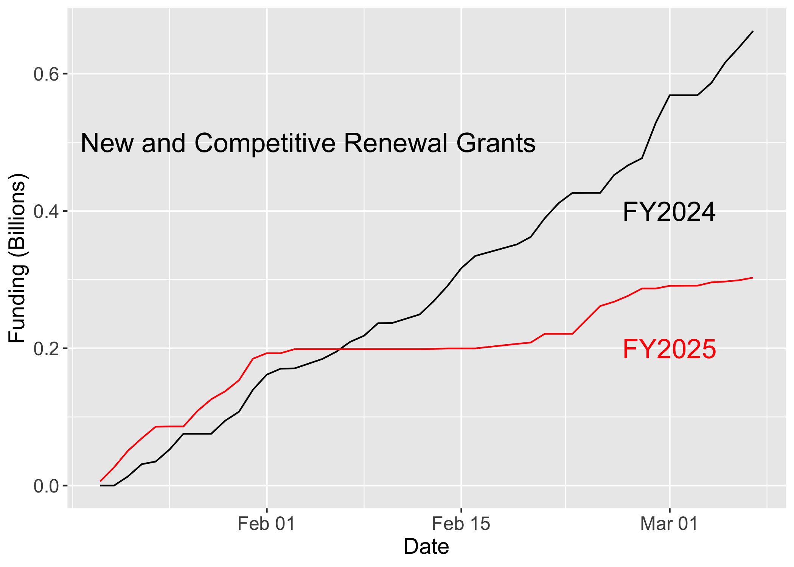

NIH Changes Since January 20, 2025
NIH Funding curves

National Institute of Diabetes and Digestive and Kidney Disease Council NIDDK April 24 (to be posted Monday March 24)
National Library of Medicine Board of Regents NLM May 13 (to be posted Monday March 24)
National Institute of General Medical Sciences NIGMS May 22 (not posted yet)
Bluetorials

Terminated Grants from HHS TAGGS